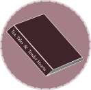

Welcome to Tea, Tales, and Tender Hearts! This is my little corner of the internet where I share my love for all things romance, dark romance, fantasy, romantasy, and magical realism. While romance is at the heart of everything here, I’ll also be diving into other genres that make us feel all kinds of things, from the fantastical to the deeply emotional.
I created this space to connect with fellow readers who appreciate swoon-worthy characters, heartwarming tales, and the kind of stories that stay with us long after we turn the last page. Whether you're into steamy love stories or magical adventures, you’ll find something to enjoy. From book reviews to reading challenges and author spotlights, this blog is all about celebrating the books that make us feel.
But Tea, Tales, and Tender Hearts is more than just a place for books—it’s a community. A space where we can share recommendations, explore new genres, and chat about those stories that make us believe in love. So, grab your favorite drink and get comfy, because I can’t wait to talk about the books that make our hearts race. And as I grow this blog, I’ll be highlighting diverse voices and love stories from all corners of the literary world.
Hi! I’m Fabi—a book lover, creative, and a person who believes in the magic of stories. I’ve always been passionate about reading and writing, and creating this blog was my way of sharing that passion with others. Romance novels have always had a special place in my heart, and this space is where I get to share my love for them with you.
I’m currently pursuing a master’s degree in multilingual web communication, which blends my passion for digital design and language. I’m fluent in English, Spanish, and French, and I’m working on improving my Portuguese. My love for languages ties closely with my interest in discovering different cultures, especially through food. I find food to be such a deep and personal way to connect with people and their stories, which is why I’m always on the lookout for new culinary experiences when I travel.
When I’m not diving into books or exploring new places, I’m likely working on my website or thinking about how to make this blog even more interactive and fun for everyone. Whether I’m working on digital projects, sharing book reviews, or exploring new cultures, I love finding ways to make my passions come together.
Tea, Tales, and Tender Hearts is still in its early stages, but I’m excited to grow this space and connect with fellow readers from all walks of life. I want to make this blog a place where we can enjoy great books, celebrate romance, and bond over the things that make life so beautiful.